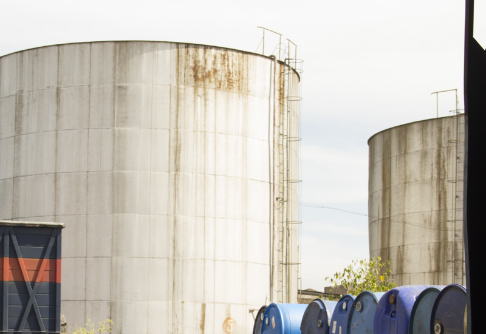
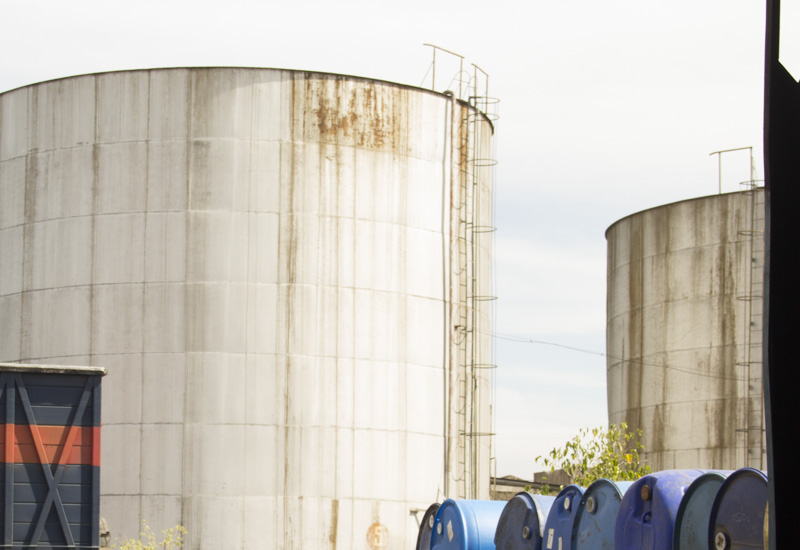
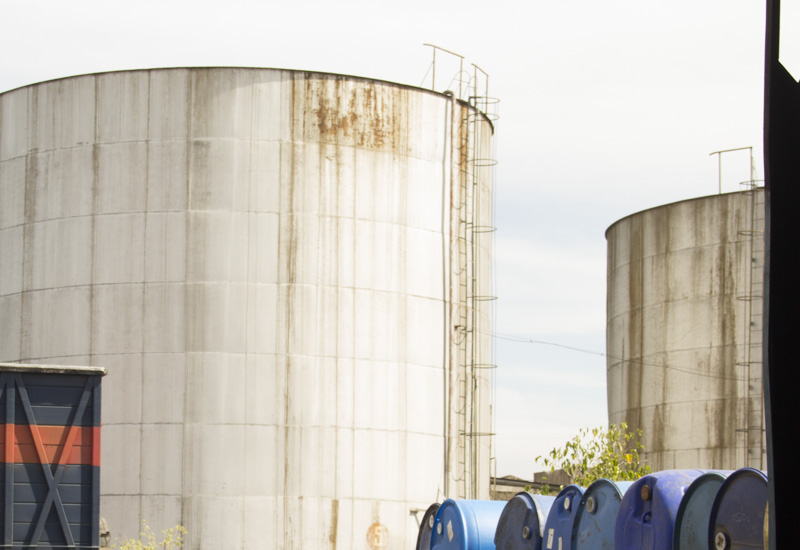

Workshop coordinator with Karen Antorveza.
Collective mapping of the neighborhood of Parque Patricios in Buenos Aires.
cheLA - TaMaCo, 2019.
The aim of this workshop was to understand the dynamics of the neighbourhood by geolocalising those necessary social actors and resources (neighbours, NGOs and other organisations, re-usable materials, urban voids, among others) in order to create a network of possible working community.

The methodology used during the mapping was created by Iconoclasistas and presented in their "Manual of collective mapping".
PH: Camila Narbaitz Sarsur - Francesco Milano